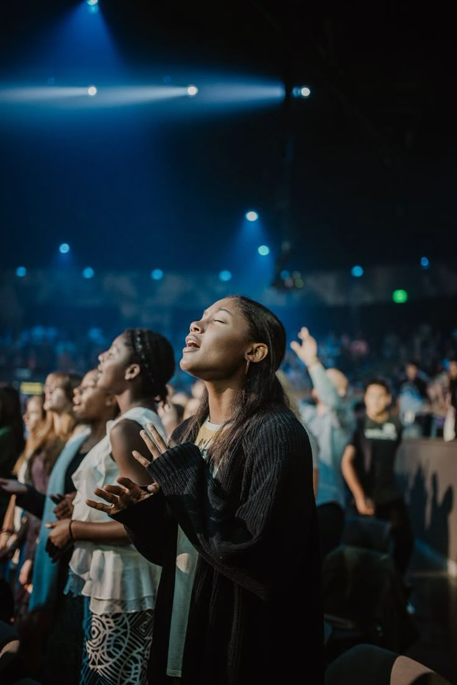
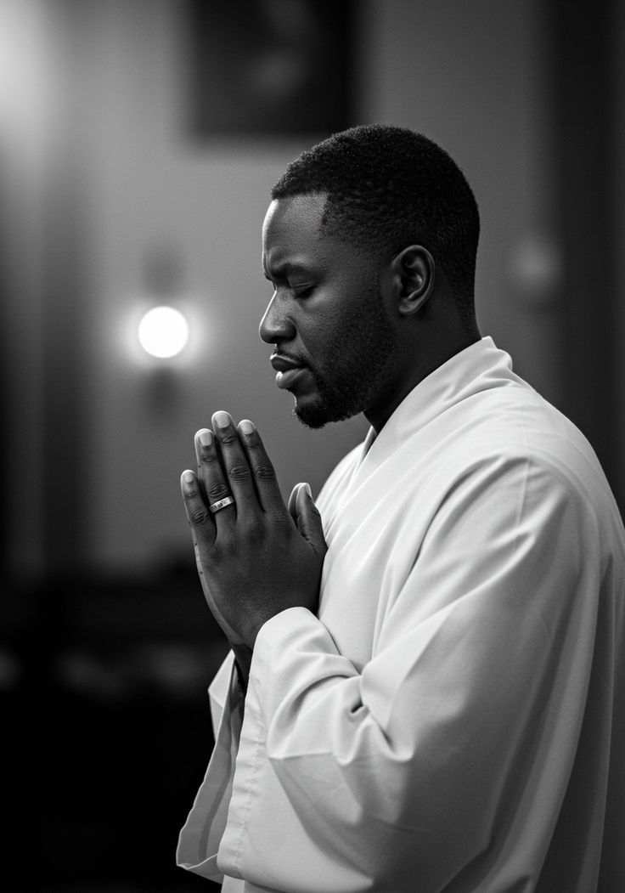

ENGAGEMENTS ET MINISTERES
ENGAGEMENTS ET MINISTERES
Le Royaume de Dieu ne se bâtit pas dans la passivité, mais dans l’action, le service et l’amour. À Kingdom of Heaven Church, nous croyons que chaque croyant est un ouvrier du Royaume, appelé à servir selon les dons que Dieu lui a confiés. Cette page est une invitation à vous lever, à vous engager, et à faire partie d’une œuvre vivante et éternelle.
"Chacun de vous a reçu un don particulier; qu’il le mette au service des autres, comme de bons intendants de la grâce de Dieu." 1 Pierre 4:10
Présentation des ministères
Ministère de la louange:
musiciens, chanteurs, techniciens sonMinistère de l’accueil:
hôtes, guides, responsables de l’intégrationMinistère de la prière et intercession:
équipe de prière, veille spirituelleMinistère de l’enseignement:
prédicateurs, enseignants bibliques, animateurs de groupesMinistère jeunesse:
encadrement des enfants, ados, jeunes adulMinistère social:
aide aux démunis, visites, soutien communautaireMinistère technique et communication:
audiovisuel, site web, réseaux sociauxMinistère logistique:
organisation des événements, gestion des salles, sécurité
Témoignages des serviteurs
"Servir dans le ministère de la louange m’a permis de grandir spirituellement et de découvrir la puissance de l’adoration. C’est une joie de contribuer à l’atmosphère du culte." David, musicien
Temoignage de David le musicien"En accueillant les nouveaux, j’ai appris à aimer sans condition et à voir chaque personne comme une bénédiction. Le service m’a transformée."Esther, équipe accueil
 Temoignage de Esther,équipe accueil
Temoignage de Esther,équipe accueil
"Depuis que je sers dans le ministère de l’enseignement, ma compréhension de la Parole a grandi. Enseigner m’oblige à étudier profondément la Bible, et cela a transformé ma foi. Voir les autres grandir spirituellement grâce à ce que Dieu me permet de partager est une grâce immense."
Pasteur Leon,Enseignement Biblique"Travailler avec les jeunes m’a appris à écouter, à aimer, et à guider avec patience. C’est une mission dynamique qui me pousse à toujours chercher Dieu pour mieux répondre à leurs besoins. Chaque transformation de vie est un témoignage vivant de l’amour de Christ."
 Ange Bella ,Responsable Jeunesse
Ange Bella ,Responsable Jeunesse
Vous ne savez pas encore où servir? Rejoignez notre session "Découverte des ministères", chaque premier samedi du mois. Vous pourrez rencontrer les responsables, poser vos questions, et discerner votre appel.
Le service est une réponse à l’amour de Dieu. En servant, nous devenons les mains et les pieds du Christ sur terre. Le ministère n’est pas une tâche, mais une vocation.
Appel à l’action
Le Royaume a besoin de vous. Vos talents, votre temps, votre coeur sont précieux. Ne restez pas spectateur: devenez acteur de l’œuvre de Dieu. Rejoignez un ministère, et laissez Dieu vous utiliser pour sa gloire